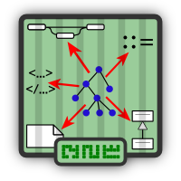

GrammarZoo
The objective of the Grammar Zoo is to accumulate grammars of various software languages, extracted and recovered from language documentation, parser specifications and other artefacts and make them available in a range of formats.
113 entries and counting
216 grammars: 113 fetched + 96 extracted + 5 corrected + 1 recovered + 1 imported
Bulk download of the whole corpus:
- (•) Ada 83 [git]
- (•) Ichbiah [git] [ReadMe]
- Source: Jean D. Ichbiah, Preliminary Ada reference manual, ACM SIGPLAN Notices, Volume 14 Issue 6a, June 1979 [DOI]
- (•) LNCS 0106 [git] [ReadMe]
- Source: Proposed Standard Document United States Department of Defense, The Programming Language Ada Reference Manual, 1981, Appendix E: Syntax Summary, pages 221–225 [DOI]
- (•) LNCS 0155 [git] [ReadMe]
- Source: ANSI/MIL-STD-1815A-1983, The Programming Language Ada Reference Manual, 1990, Appendix E: Syntax Summary, pages E-1–E-6 (277–282) [DOI]
- (•••) Ada 95 [git]
- (••) Kellogg [git] [ReadMe] [ANTLR]
- Source: Oliver Kellogg,
ada.g, 2003
- The fetched grammar is [ada.g]
- dir : fetchedlevel : 0method : copy
- The extracted grammar is [grammar.bgf]
- dir : extractedlevel : 1method : recoveryderivedFrom : fetchedtoolused : antlrpptoolused : antlr2bgf
- (•••) Kempe [git] [ReadMe]
- Source: Magnus Kempe, Ada 95 Reference Manual, Hypertext version, 1994–1997 [TOC] [Annex]
- The extracted grammar is
- Files used: [config.edd] [post-extract.xbgf]
- dir : extractedlevel : 1method : recoveryderivedFrom : fetchedtoolused : perlfileused : config.eddtoolused : hunterfileused : post-extract.xbgftoolused : xbgf
- The corrected grammar is [grammar.bgf]
- Files used: [correct.xbgf]
- dir : correctedlevel : 1method : recoveryderivedFrom : extractedfileused : correct.xbgftoolused : xbgf
- (•••) Lämmel — Verhoef [git] [ReadMe]
- Source: Ralf Lämmel, Chris Verhoef, Engineering of Grammarware. Browsable Ada 95 Grammar 1.0, December 2000 [Grammar]
- The extracted grammar is [grammar.bgf]
- Files used: [config.edd]
- dir : extractedlevel : 1method : recoveryderivedFrom : fetchedtoolused : hunterfileused : config.edd
- The corrected grammar is [grammar.bgf]
- Files used: [correct.xbgf]
- dir : correctedlevel : 1method : recoveryderivedFrom : extractedtoolused : xbgffileused : correct.xbgf
- (•) LNCS 1246 [git] [ReadMe] [DOI]
- Source: International Standard ISO/IEC 8652:1995 (E), Ada 95 Reference Manual. Language and Standard Libraries, Taft, Tucker S.; Duff, Robert A. (Eds.), 1997, Annex E (informative): Syntax Summary, pages 479–493
- (••) LNCS 2219 [git] [ReadMe] [DOI]
- Source: International Standard ISO/IEC 8652/1995(E) with Technical Corrigendum 1, Consolidated Ada Reference Manual. Language and Standard Libraries, Also published as LNCS 2219 with Taft, T.S.; Duff, R.A.; Brukardt, R.L.; Ploedereder, E. as editors, 2001, Annex P, pages 497–512
- The extracted grammar is [grammar.bgf]
- Files used: [config.edd] [post-extract.xbgf] [correct.xbgf]
- dir : extractedlevel : 1method : recoveryderivedFrom : fetchedtoolused : hunterfileused : config.eddtoolused : xbgffileused : post-extract.xbgffileused : correct.xbgf
- (••) Ada 2005 [git]
- (••) LNCS 4348 [git] [ReadMe]
- Source: International Standard ISO/IEC 8652/1995(E) with Technical Corrigendum 1 and Amendment 1, Ada 2005 Reference Manual. Language and Standard Libraries, Also published as LNCS 4348 with Taft, S.T.; Duff, R.A.; Brukardt, R.L.; Ploedereder, E.; Leroy, P. as editors, 2006, Annex P, pages 675–692 [DOI]
- The extracted grammar is [grammar.bgf]
- Files used: [config.edd] [post-extract.xbgf] [correct.xbgf]
- dir : extractedlevel : 1method : recoveryderivedFrom : fetchedtoolused : hunterfileused : config.eddtoolused : xbgffileused : post-extract.xbgffileused : correct.xbgf
- (••) TXL [git]
- (••) Le Hyaric — Cordy [git] [ReadMe] [TXL Grammars]
- Source: Bruno Le Hyaric, James R. Cordy, TXL Basis Grammar for Ada 2005, version 1.5, July 2010 [Project]
- The extracted grammar is [grammar.bgf]
- dir : extractedlevel : 1method : recoveryderivedFrom : fetchedtoolused : txl2bgf
- (••) Delphi Assembler [git]
- (••) TXL [git]
- (••) Cangas [git] [ReadMe] [TXL Grammars]
- Source: Jorge L. Cangas, TXL Grammar for Borland Delphi 2006,
asm.grammar, December 2007
- The fetched grammar is [asm.grammar]
- dir : fetchedlevel : 0method : downloadmethod : unzippartOf : /pascal/delphi/delphi2006/cangas
- The extracted grammar is [grammar.bgf]
- dir : extractedlevel : 1method : recoveryderivedFrom : fetchedtoolused : txl2bgf
(••) ATLAS Transformation Language (↑)
- (••) ATL Code Generator (ACG) [git] [ReadMe] [Atlantic]
- Source: Frédéric Jouault,
ACG.ecore, 2007/07/25
- The fetched grammar is [ACG.ecore]
- dir : fetchedlevel : 0method : download
- The extracted grammar is [grammar.bgf]
- dir : extractedlevel : 1method : automaticderivedFrom : fetchedtoolused : ecore2bgf
- (••) ATLAS Transformation Language (ATL) [git] [ReadMe] [Atlantic]
- Source: Frédéric Jouault,
ATL.ecore, 2007/07/26
- The fetched grammar is [ATL.ecore]
- dir : fetchedlevel : 0method : download
- The extracted grammar is [grammar.bgf]
- dir : extractedlevel : 1method : automaticderivedFrom : fetchedtoolused : ecore2bgf
- (••) Brunelière [git] [ReadMe] [Atlantic]
- Source: Hugo Brunelière,
AWKPrograms.ecore, 2005/08/09
- The extracted grammar is [grammar.bgf]
- dir : extractedlevel : 1method : automaticderivedFrom : fetchedtoolused : ecore2bgf
- (•) Manual [git] [ReadMe]
- Source: The Open Group, The Single UNIX ® Specification, 2nd version, 1997, Grammar [Online]
- The fetched grammar is [src.grammar.txt]
- dir : fetchedlevel : 0method : copy
- (••) Visual Basic [git] [Reference]
- (••) Abstract syntax [git] [ReadMe] [Atlantic]
- Source: Quentin Glineur, Visual Basic 0.1,
vb.ecore, 2007/10/30
- The fetched grammar is [vb.ecore]
- dir : fetchedlevel : 0method : download
- The extracted grammar is [grammar.bgf]
- dir : extractedlevel : 1method : automaticderivedFrom : fetchedtoolused : ecore2bgf
- (••) Concrete syntax [git] [ReadMe] [TXL Grammars]
- Source: James R. Cordy, Visual Basic 6.0 Grammar, Version 1.3, September 2010
- The extracted grammar is [grammar.bgf]
- dir : extractedlevel : 1method : automaticderivedFrom : fetchedtoolused : txl2bgf
- (••) ANSI C90 [git]
- (••) Rascal [git] [ReadMe]
- Source: Arnold Lankamp,
lang::c90::syntax::C, 2011 [GitHub]
- The fetched grammar is [C.rsc]
- dir : fetchedlevel : 0method : git
- The extracted grammar is [grammar.bgf]
- dir : extractedlevel : 1method : automaticderivedFrom : fetchedtoolused : rscs2bgf
- (••) SDF [git] [MetaEnv]
- Source: Jurgen Vinju, Taeke Kooiker, Mark van den Brand,
ansi-c/syntax/*.sdf, February 2006 – December 2008 [GitHub]
- The extracted grammar is [grammar.bgf]
- dir : extractedlevel : 1method : automaticderivedFrom : fetchedtoolused : sdf2bgf
- (••) ISO C99 [git]
- (••) ISO/IEC 9899:1999 [git] [ReadMe]
- Source: ISO/IEC 9899:1999(E), Programming languages — C, December 1999, Annex A, pages 402–416
- The extracted grammar is [grammar.bgf]
- dir : extractedlevel : 1method : automaticderivedFrom : fetchedtoolused : pdf2llltoolused : lll2bgftoolused : normalisetoolused : subgrammar
- (••) ISO/IEC 9899:TC2 [git] [ReadMe]
- Source: ISO/IEC 9899:TC2, WG14/N1124 Committee Draft, May 2005, Annex A, pages 403–417
- The extracted grammar is [grammar.bgf]
- Files used: [correct.xbgf]
- dir : extractedlevel : 1method : automaticderivedFrom : fetchedtoolused : pdf2llltoolused : lll2bgftoolused : normalisefileused : correct.xbgftoolused : xbgftoolused : subgrammar
- (••) ISO/IEC 9899:TC3 [git] [ReadMe]
- Source: ISO/IEC 9899:TC3, WG14/N1256 Committee Draft, September 2007, Annex A, pages 403–418
- The extracted grammar is [grammar.bgf]
- Files used: [correct.xbgf]
- dir : extractedlevel : 1method : automaticderivedFrom : fetchedtoolused : pdf2llltoolused : lll2bgftoolused : normalisefileused : correct.xbgftoolused : xbgftoolused : subgrammar
- (••) GNU C [git]
- (••) Antoniol heuristic [git] [ReadMe] [TXL Grammars]
- Source: James R. Cordy, Antoniol et al heuristic to resolve all #ifs in C programs, version 2.0, November 2010
- The fetched grammar is [ifdef.txl]
- dir : fetchedlevel : 0method : downloadmethod : unzippartOf : cordy-malton-dahn
- The extracted grammar is [grammar.bgf]
- dir : extractedlevel : 1method : automaticderivedFrom : fetchedtoolused : txl2bgf
- (••) Cordy — Malton [git] [ReadMe] [TXL Grammars]
- Source: Andrew J. Malton, James R. Cordy, TXL Base Grammar for ANSI and K+R C, February 2002
- The fetched grammar is [C.Grm] [c.Txl]
- dir : fetchedlevel : 0method : downloadmethod : unzipsubsetOf : malton-dahn
- The extracted grammar is [grammar.bgf]
- dir : extractedlevel : 1method : automaticderivedFrom : fetchedtoolused : txl2bgftoolused : mergebgf
- (••) Cordy — Malton — Dahn [git] [ReadMe] [TXL Grammars]
- Source: James R. Cordy, Andrew J. Malton, Christopher Dahn, TXL C Basis Grammar, Version 5.2, July 2011
- The extracted grammar is [grammar.bgf]
- dir : extractedlevel : 1method : automaticderivedFrom : fetchedtoolused : txl2bgftoolused : mergebgf
- (••) Malton — Dahn [git] [ReadMe] [TXL Grammars]
- Source: Andrew J. Malton, James R. Cordy, Christopher Dahn, TXL Base Grammar for ANSI and K+R C, with GNU C extensions and overrides to preserve comments, May 2004
- The extracted grammar is [grammar.bgf]
- dir : extractedlevel : 1method : automaticderivedFrom : fetchedtoolused : txl2bgftoolused : mergebgftoolused : normalise
- (••) C subsets [git]
- (••) Brunelière [git] [ReadMe] [Atlantic]
- Source: Hugo Brunelière, C 1.0, a simplified metamodel for a subset of the C language,
C.ecore, 2005/08/08
- The fetched grammar is [C.ecore]
- dir : fetchedlevel : 0method : download
- The extracted grammar is [grammar.bgf]
- dir : extractedlevel : 1method : automaticderivedFrom : fetchedtoolused : ecore2bgftoolused : normalise
- (••) C++98 [git]
- (••) ISO/IEC 14882:1998 [git] [ReadMe]
- Source: ISO/IEC 14882:1998(E), Programming languages — C++, First edition, September 1998, Annex A, pages 667–684
- The extracted grammar is [grammar.bgf]
- Files used: [config.edd] [post-extract.xbgf]
- dir : extractedlevel : 1method : automaticfileused : config.eddtoolused : hunterfileused : post-extract.xbgftoolused : xbgf
- (••) C++03 [git] [Wikipedia]
- (••) Elges — Cordy [git] [ReadMe]
- Source: Mike Elges, James R. Cordy, A complete TXL base grammar for ANSI C++ 3.0, Rev 21.3.01, November 2002
- The extracted grammar is [grammar.bgf]
- Files used: [post-extract.xbgf]
- dir : extractedlevel : 1derivedFrom : fetchedmethod : automatictoolused : txl2bgffileused : post-extract.xbgftoolused : xbgf
- (•) ISO N2461 [git] [ReadMe]
- Source: ISO/IEC SC22 N2661, Working Draft, Standard for Programming Language C++, 2007-10-22, Annex A, pages 1089–1101
- (••) ISO N2723 [git] [ReadMe]
- Source: ISO/IEC SC22/WG21 N2723=08-0233 Working Draft, Standard for Programming Language C++, August 2008, Annex A, pages 1089–1101
- The extracted grammar is [grammar.bgf]
- Files used: [post-extract.xbgf]
- dir : extractedlevel : 1method : automatictoolused : pdf2llltoolused : lll2bgffileused : post-extract.xbgftoolused : xbgftoolused : subgrammar
- (••) C++ subsets [git]
- (••) Brunelière [git] [ReadMe] [Atlantic]
- Source: Hugo Brunelière, C++ 1.0, a simplified metamodel corresponding to a small subset of the language,
CPP.ecore, 2005/08/05
- The fetched grammar is [CPP.ecore]
- dir : fetchedlevel : 0method : download
- The extracted grammar is [grammar.bgf]
- dir : extractedlevel : 1method : automaticderivedFrom : fetchedtoolused : ecore2bgftoolused : normalise
- (•••) C♯ 1.x [git]
- (••) ECMA-334, 1st ed. [git] [ReadMe]
- Source: ECMA-334, 1st edition, December 2001, Appendix A, pages 339–364 [Archive] [PDF]
- The extracted grammar is [grammar.bgf]
- Files used: [config.edd] [post-extract.xbgf]
- dir : extractedlevel : 1derivedFrom : fetchedmethod : automaticfileused : config.eddtoolused : hunterfileused : post-extract.xbgftoolused : xbgf
- (••) ECMA-334, 2nd ed. [git] [ReadMe]
- Source: ECMA-334, 2nd edition, December 2002, Appendix A, pages 335–360 [Archive] [PDF]
- The fetched grammar is [src.grammar.txt]
- dir : fetchedlevel : 0method : copy
- The extracted grammar is [grammar.bgf]
- dir : extractedlevel : 1derivedFrom : fetchedmethod : automatictoolused : pdf2llltoolused : lll2pdftoolused : normalise
- (•••) ISO/IEC 23270:2003 [git] [ReadMe]
- Source: ISO/IEC 23270:2003(E), Information technology — Programming languages — C#, 1st edition, 2003
- Source: Vadim Zaytsev, ECMA-334 C# Grammar Recovered, 2005 [Online] [GitHub]
- Source: V. Zaytsev, Correct C# Grammar too Sharp for ISO, GTTSE 2005, Extended abstract [GTTSE] [LPPR] [Abstract] [Slides]
- The fetched grammar is [CSHARP1.0.LLL]
- dir : fetchedlevel : 0method : typeover
- The extracted grammar is [grammar.bgf]
- Files used: [lll2.edd]
- dir : extractedlevel : 1derivedFrom : fetchedmethod : automaticfileused : lll2.eddtoolused : hunter
- The imported grammar is [grammar.bgf]
- Files used: [lll2.edd]
- dir : importedlevel : 3derivedFrom : recoveredmethod : automaticfileused : lll2.eddtoolused : hunter
- (••) Microsoft C♯ 1.0 [git] [ReadMe]
- Source: Microsoft, C# Language Specification, Version 1.0, 2002 [DOC]
- The fetched grammar is [src.grammar.txt]
- dir : fetchedlevel : 0method : copy
- The extracted grammar is [grammar.bgf]
- dir : extractedlevel : 1derivedFrom : fetchedmethod : automatictoolused : pdf2llltoolused : lll2bgf
- (••) Microsoft C♯ 1.2 [git] [ReadMe]
- Source: Microsoft, C# Language Specification, Version 1.2, 2003 [DOC]
- The fetched grammar is [src.grammar.txt]
- dir : fetchedlevel : 0method : copy
- The extracted grammar is [grammar.bgf]
- dir : extractedlevel : 1derivedFrom : fetchedmethod : automatictoolused : pdf2llltoolused : lll2bgf
- (•••) C♯ 2.0 [git]
- (••) ECMA-334, 3rd ed. [git] [ReadMe]
- Source: ECMA-334, 3rd edition, June 2005 [Archive] [PDF]
- The fetched grammar is [src.grammar.txt]
- dir : fetchedlevel : 0method : copy
- The extracted grammar is [grammar.bgf]
- dir : extractedlevel : 1derivedFrom : fetchedmethod : automatictoolused : pdf2llltoolused : lll2pdftoolused : normalise
- (•••) ECMA-334, 4th ed. [git] [ReadMe]
- Source: ECMA-334, 4th edition, June 2006 [Standard] [PDF]
- The fetched grammar is [src.grammar.txt]
- dir : fetchedlevel : 0method : copy
- The extracted grammar is [grammar.bgf]
- dir : extractedlevel : 1derivedFrom : fetchedmethod : automatictoolused : pdf2llltoolused : lll2pdftoolused : normalise
- The corrected grammar is [grammar.bgf]
- Files used: [correct.xbgf]
- dir : correctedlevel : 1derivedFrom : extractedmethod : recoveryfileused : correct.xbgftoolused : xbgftoolused : subgrammar
- (••) ISO/IEC 23270:2006 [git] [ReadMe]
- Source: ISO/IEC 23270:2006(E), Information technology — Programming languages — C#, 2nd edition, September 2006 [Standard] [PDF.ZIP]
- The fetched grammar is [src.grammar.txt]
- dir : fetchedlevel : 0method : copy
- The extracted grammar is [grammar.bgf]
- dir : extractedlevel : 1derivedFrom : fetchedmethod : automatictoolused : pdf2llltoolused : lll2pdftoolused : normalise
- (•••) C♯ 3.0 [git]
- (••) Antoniol heuristic [git] [ReadMe] [TXL Grammars]
- Source: James R. Cordy, Andrew J. Malton, Christopher Dahn, Antoniol et al heuristic to resolve all #ifs in C programs, version 1.1, May 2008
- The fetched grammar is [ifdef.txl]
- dir : fetchedlevel : 0method : downloadmethod : unzippartOf : /csharp/v3.0/cordy/fetched
- The extracted grammar is [grammar.bgf]
- dir : extractedlevel : 1derivedFrom : fetchedmethod : automatictoolused : txl2bgf
- (••) TXL [git] [ReadMe] [TXL Grammars]
- Source: James R. Cordy, Validated TXL Basis Grammar for C# Edition 3, version 2.1, February 2009
- The fetched grammar is [CSharp]
- dir : fetchedlevel : 0method : downloadmethod : unzip
- The extracted grammar is [grammar.bgf]
- dir : extractedlevel : 1derivedFrom : fetchedmethod : automatictoolused : txl2bgf
- (•••) Microsoft C♯ 3.0 [git] [ReadMe]
- Source: Microsoft, C# Language Specification, Version 3.0, 2007 [DOC]
- The fetched grammar is [src.grammar.txt]
- dir : fetchedlevel : 0method : copy
- The extracted grammar is [grammar.bgf]
- dir : extractedlevel : 1derivedFrom : fetchedmethod : automatictoolused : pdf2llltoolused : lll2bgf
- The corrected grammar is [grammar.bgf]
- Files used: [correct.xbgf]
- dir : correctedlevel : 1derivedFrom : extractedmethod : recoveryfileused : correct.xbgftoolused : xbgf
- (•••) C♯ 4.0 [git]
- (•••) Microsoft C♯ 4.0 [git] [ReadMe]
- Source: Microsoft, C# Language Specification, Version 4.0, 2010 [DOC]
- The fetched grammar is [src.grammar.txt]
- dir : fetchedlevel : 0method : copy
- The extracted grammar is [grammar.bgf]
- dir : extractedlevel : 1derivedFrom : fetchedmethod : automatictoolused : pdf2llltoolused : lll2bgf
- The corrected grammar is [grammar.bgf]
- Files used: [correct.xbgf]
- dir : correctedlevel : 1derivedFrom : extractedmethod : recoveryfileused : correct.xbgftoolused : xbgf
- (••) C♯ subsets [git]
- (••) Brunelière [git] [ReadMe] [Atlantic]
- Source: Hugo Brunelière, C# 1.0, a simplified metamodel corresponding to a small subset of the language,
CSharp.ecore, 2005/08/08
- The fetched grammar is [CSharp.ecore]
- dir : fetchedlevel : 0method : download
- The extracted grammar is [grammar.bgf]
- dir : extractedlevel : 1method : automaticderivedFrom : fetchedtoolused : ecore2bgf
- (•) Dart [git] [Project]
(••) Domain Specific Languages (↑)
- (••) Abstract Behavioral Specification Language (ABS) [git]
- (••) HATS [git] [ReadMe] [ABS Tool Suite]
- Source: HATS team, Grammar definition for the ABS language, 05.2012–02.2013
- (••) ABS in Beaver [git] [Beaver]
- The extracted grammar is
- Files used: [abs.edd] [getkwd.py]
- dir : extractedlevel : 1method : semi-automatedderivedFrom : fetchedtoolused : hunterfileused : abs.eddfileused : getkwd.py
- (••) ABS in Rascal [git] [Rascal]
- The fetched grammar is [ABS.rsc]
- dir : fetchedlevel : 0method : manualderivedFrom : ../extracted
- The extracted grammar is [grammar.bgf]
- dir : extractedlevel : 1method : rscs2bgfderivedFrom : fetchedtoolused : rscs2bgf
- (••) Architecture Description Language (ADL) [git]
- (••) ACME [git] [ReadMe] [Atlantic]
- Source: Julien Baudry,
ACME.ecore, 2006/05/21 [Project]
- The fetched grammar is [ACME.ecore]
- dir : fetchedlevel : 0method : download
- The extracted grammar is [grammar.bgf]
- dir : extractedlevel : 1method : automaticderivedFrom : fetchedtoolused : ecore2bgf
- (••) API2MoL [git] [ReadMe]
- (••) API2MoL abstract syntax [git] [API2MoL]
- Source: Javier Canovas, Frédéric Jouault, Jordi Cabot, Jesus Garcia Molina,
api2mol.ecore, 2011-04-08 [api2mol.ecore]
- The fetched grammar is [api2mol.ecore]
- dir : fetchedlevel : 0method : download
- The extracted grammar is [grammar.bgf]
- dir : extractedlevel : 1method : automaticderivedFrom : fetchedtoolused : ecore2bgf
- (••) API2MoL concrete syntax [git] [API2MoL]
- Source: Javier Canovas, Frédéric Jouault, Jordi Cabot, Jesus Garcia Molina,
api2mol.g, 2011-04-08 [api2mol.g]
- The fetched grammar is [api2mol.g]
- dir : fetchedlevel : 0method : download
- The extracted grammar is [grammar.bgf]
- dir : extractedlevel : 1method : automaticderivedFrom : fetchedtoolused : antlr2bgf
- (••) Business [git]
- (••) Business Intelligence and Reporting Tools (BIRT) [git] [Project]
- (••) ClassicModels [git] [ReadMe] [Atlantic]
- Source: Hugo Brunelière, ClassicModels BIRT Sample database,
ClassicModels.ecore, 2007/02/16
- The extracted grammar is [grammar.bgf]
- dir : extractedlevel : 1method : automaticderivedFrom : fetchedtoolused : ecore2bgf
- (••) Business Entity Model [git] [ReadMe] [Atlantic]
- Source: Julien Baudry,
BusinessEntityModel.ecore, 2006/07/20
- The extracted grammar is [grammar.bgf]
- dir : extractedlevel : 1method : automaticderivedFrom : fetchedtoolused : ecore2bgf
- (••) Business Motivation Model (BMM) [git] [Project]
- (••) BMM 1.0 [git] [Project]
- (•) CMOF XMI [git]
- Source: OMG, Business Motivation Model (BMM), Machine readable file,
07-08-05.xmi, version 1.0, 2007-08-05 [Online]
- The fetched grammar is [07-08-05.xmi]
- dir : fetchedlevel : 0method : download
- (••) Ecore from CMOF XMI [git] [ReadMe] [Atlantic]
- Source: OMG, The Business Motivation Model from the OMG, written from the OMG BMM specification, generated from the CMOF XMI for BMM 1.0,
bmmOmg.ecore, January 2010
- The fetched grammar is [bmmOmg.ecore]
- dir : fetchedlevel : 0method : download
- The extracted grammar is [grammar.bgf]
- dir : extractedlevel : 1method : automaticderivedFrom : fetchedtoolused : ecore2bgf
- (••) Ecore XMI [git] [ReadMe] [Atlantic]
- Source: OMG, The Business Motivation Model from the OMG, written from the OMG BMM specification,
BMM.ecore, January 2010
- The fetched grammar is [BMM.ecore]
- dir : fetchedlevel : 0method : download
- The extracted grammar is [grammar.bgf]
- dir : extractedlevel : 1method : automaticderivedFrom : fetchedtoolused : ecore2bgf
- (•) BMM 1.1 [git] [Project]
- (•) CMOF XMI [git]
- Source: OMG, Business Motivation Model (BMM), Machine readable file,
08-11-13.xmi, version 1.1, 2008-11-13 [Online]
- The fetched grammar is [08-11-13.xmi]
- dir : fetchedlevel : 0method : download
- (•) BMM 1.2β2 [git] [Project]
- (•) CMOF XMI [git]
- Source: OMG, Business Motivation Model (BMM), Machine readable file,
BMMEA.xmi, version 1.2 — Beta 2, 2013-08-01 [Online]
- The fetched grammar is [BMMEA.xmi]
- dir : fetchedlevel : 0method : download
- (••) Business Process Model [git] [ReadMe] [Atlantic]
- Source: Julien Baudry,
BusinessProcessModel.ecore, 2006/07/20
- The extracted grammar is [grammar.bgf]
- dir : extractedlevel : 1method : automaticderivedFrom : fetchedtoolused : ecore2bgf
- (••) Semantic Business Vocabularies and Business Rules (SBVR) [git] [Project]
- (••) SBVR 1.0 [git] [Project]
- (••) Doux [git] [ReadMe] [Atlantic]
- Source: Guillaume Doux,
SBVRvoc.ecore, 2009
- The fetched grammar is [SBVRvoc.ecore]
- dir : fetchedlevel : 0method : download
- The extracted grammar is [grammar.bgf]
- dir : extractedlevel : 1method : automaticderivedFrom : fetchedtoolused : ecore2bgf
- (••) Eclipse [git] [ReadMe] [Atlantic]
- Source: Eclipse,
sbvrEclipse.ecore, 2009 [Wiki]
- The extracted grammar is [grammar.bgf]
- dir : extractedlevel : 1method : automaticderivedFrom : fetchedtoolused : ecore2bgf
- (••) Kleiner [git] [ReadMe] [Atlantic]
- Source: Mathias Kleiner, A metamodel created for writing the Semantic Business Vocabularies and Business Rules from OMG,
SimpleSBVR.ecore, 2009
- The fetched grammar is [SimpleSBVR.ecore]
- dir : fetchedlevel : 0method : download
- The extracted grammar is [grammar.bgf]
- dir : extractedlevel : 1method : automaticderivedFrom : fetchedtoolused : ecore2bgf
- (••) OMG [git] [ReadMe] [Atlantic]
- Source: OMG,
sbvrOMG.ecore, 2009
- The fetched grammar is [sbvrOMG.ecore]
- dir : fetchedlevel : 0method : download
- The extracted grammar is [grammar.bgf]
- dir : extractedlevel : 1method : automaticderivedFrom : fetchedtoolused : ecore2bgf
- (•) SBVR 1.1 [git] [Project]
- (•) OMG [git]
- Source: OMG, Documents Associated With SBVR, Normative Machine Consumable Files, version 1.1, 2013 [Online]
- (•) Metamodel [git] [ReadMe]
- Source: OMG, SBVR Metamodel,
SBVR-model.xml, 2013-03-07 [Online]
- The fetched grammar is [SBVR-model.xml]
- dir : fetchedlevel : 0method : download
- (•) Schema [git] [ReadMe]
- Source: OMG, SBVR Metamodel XML Schema,
SBVR.xsd, 2013-03-08 [Online]
- The fetched grammar is [SBVR.xsd]
- dir : fetchedlevel : 0method : download
- (•) Vocabularies [git] [ReadMe]
- Source: OMG, MOF-based SBVR Model of all SBVR Vocabularies,
SBVR.xml, 2013-07-02 [Online]
- The fetched grammar is [SBVR.xml]
- dir : fetchedlevel : 0method : download
- (•) SBVR 1.2 [git] [Project]
- (•) OMG [git]
- Source: OMG, Documents Associated With Semantics Of Business Vocabulary And Business Rules (SBVR), Normative Machine Consumable Files, version 1.2, 2013 [Online]
- (•) Content Model [git] [ReadMe]
- Source: OMG, SBVR Content Model for SBVR,
SBVR-Content-Model-for-SBVR.xml, 2013-07-02 [Online]
- (•) Metamodel [git] [ReadMe]
- Source: OMG, SBVR Metamodel in terms of XMI,
SBVR-XMI-Metamodel.xml, 2013-05-23 [Online]
- (•) Schema [git] [ReadMe]
- Source: OMG, SBVR Schema in terms of XMI,
SBVR-XML-Schema.xsd, 2013-05-24 [Online]
- (••) XML Process Definition Language (XPDL) [git] [ReadMe] [Atlantic] [XPDL]
- Source: David Touzet, Freddy Allilaire,
XPDL-1.14.ecore, 2006/02/21
- The fetched grammar is [XPDL-1.14.ecore]
- dir : fetchedlevel : 0method : download
- The extracted grammar is [grammar.bgf]
- dir : extractedlevel : 1method : automaticderivedFrom : fetchedtoolused : ecore2bgf
- (••) Conference organisation [git]
- (••) MSR CMT [git] [ReadMe] [cmt] [Atlantic]
- Source: OntoFarm Project,
cmt.owl.ecore, June 2009
- The fetched grammar is [cmt.owl.ecore]
- dir : fetchedlevel : 0method : download
- The extracted grammar is [grammar.bgf]
- dir : extractedlevel : 1method : automaticderivedFrom : fetchedtoolused : ecore2bgf
- (••) Cocus [git] [ReadMe] [Cocus] [Atlantic]
- Source: OntoFarm Project,
Cocus.owl.ecore, June 2009
- The fetched grammar is [Cocus.owl.ecore]
- dir : fetchedlevel : 0method : download
- The extracted grammar is [grammar.bgf]
- dir : extractedlevel : 1method : automaticderivedFrom : fetchedtoolused : ecore2bgf
- (••) ConferenceReview [git] [ReadMe] [ConferenceReview] [Atlantic]
- Source: OntoFarm Project,
crs_dr.owl.ecore, June 2009
- The fetched grammar is [crs_dr.owl.ecore]
- dir : fetchedlevel : 0method : download
- The extracted grammar is [grammar.bgf]
- dir : extractedlevel : 1method : automaticderivedFrom : fetchedtoolused : ecore2bgf
- (••) Confious [git] [ReadMe] [Confious] [Atlantic]
- Source: OntoFarm Project,
confious.owl.ecore, June 2009
- The extracted grammar is [grammar.bgf]
- dir : extractedlevel : 1method : automaticderivedFrom : fetchedtoolused : ecore2bgf
- (••) ConfTool [git] [ReadMe] [ConfTool] [Atlantic]
- Source: OntoFarm Project,
confOf.owl.ecore, June 2009
- The fetched grammar is [confOf.owl.ecore]
- dir : fetchedlevel : 0method : download
- The extracted grammar is [grammar.bgf]
- dir : extractedlevel : 1method : automaticderivedFrom : fetchedtoolused : ecore2bgf
- (••) edas [git] [ReadMe] [edas] [Atlantic]
- Source: OntoFarm Project,
edas.owl.ecore, June 2009
- The fetched grammar is [edas.owl.ecore]
- dir : fetchedlevel : 0method : download
- The extracted grammar is [grammar.bgf]
- dir : extractedlevel : 1method : automaticderivedFrom : fetchedtoolused : ecore2bgf
- (••) ekaw [git] [ReadMe] [ekaw] [Atlantic]
- Source: OntoFarm Project,
ekaw.owl.ecore, June 2009
- The fetched grammar is [ekaw.owl.ecore]
- dir : fetchedlevel : 0method : download
- The extracted grammar is [grammar.bgf]
- dir : extractedlevel : 1method : automaticderivedFrom : fetchedtoolused : ecore2bgf
- (••) iasted [git] [ReadMe] [iasted] [Atlantic]
- Source: OntoFarm Project,
iasted.owl.ecore, June 2009
- The fetched grammar is [iasted.owl.ecore]
- dir : fetchedlevel : 0method : download
- The extracted grammar is [grammar.bgf]
- dir : extractedlevel : 1method : automaticderivedFrom : fetchedtoolused : ecore2bgf
- (••) MicroArch [git] [ReadMe] [MicroArch] [Atlantic]
- Source: OntoFarm Project,
MICRO.owl.ecore, June 2009
- The fetched grammar is [MICRO.owl.ecore]
- dir : fetchedlevel : 0method : download
- The extracted grammar is [grammar.bgf]
- dir : extractedlevel : 1method : automaticderivedFrom : fetchedtoolused : ecore2bgf
- (••) PaperDyne [git] [ReadMe] [PaperDyne] [Atlantic]
- Source: OntoFarm Project,
paperdyne.owl.ecore, June 2009
- The extracted grammar is [grammar.bgf]
- dir : extractedlevel : 1method : automaticderivedFrom : fetchedtoolused : ecore2bgf
- (••) PrecisionConference [git] [ReadMe] [PrecisionConference] [Atlantic]
- Source: OntoFarm Project,
PCS.owl.ecore, June 2009
- The fetched grammar is [PCS.owl.ecore]
- dir : fetchedlevel : 0method : download
- The extracted grammar is [grammar.bgf]
- dir : extractedlevel : 1method : automaticderivedFrom : fetchedtoolused : ecore2bgf
- (••) SIG KDD [git] [ReadMe] [SIG KDD] [Atlantic]
- Source: OntoFarm Project,
sigkdd.owl.ecore, June 2009
- The fetched grammar is [sigkdd.owl.ecore]
- dir : fetchedlevel : 0method : download
- The extracted grammar is [grammar.bgf]
- dir : extractedlevel : 1method : automaticderivedFrom : fetchedtoolused : ecore2bgf
- (••) SOFSEM [git] [ReadMe] [SOFSEM] [Atlantic]
- Source: OntoFarm Project,
Conference.owl.ecore, June 2009
- The extracted grammar is [grammar.bgf]
- dir : extractedlevel : 1method : automaticderivedFrom : fetchedtoolused : ecore2bgf
- (••) ZakonGroup OpenConf [git] [ReadMe] [ZakonGroup] [Atlantic]
- Source: OntoFarm Project,
OpenConf.owl.ecore, June 2009
- The extracted grammar is [grammar.bgf]
- dir : extractedlevel : 1method : automaticderivedFrom : fetchedtoolused : ecore2bgf
- (••) Multi-Agent [git]
- (••) Atelier de Développement de Logiciels à Fonctionnalité Emergente (ADELFE) [git] [Project]
- Source: Marie-Pierre Gleizes, Thierry Millan, Gauthier Picard, ADELFE: Using SPEM Notation to Unify Agent Engineering Processes and Methodology, December 2000 to August 2003 [Report]
- (••) Simon [git] [ReadMe] [Atlantic]
- Source: Eric Simon,
ADELFE.ecore, 2006/07/13 - Source: Carole Bernon, Massimo Cossentino, Marie-Pierre Gleizes, Paola Turci, Franco Zambonelli, A Study of Some Multi-Agent Meta-Models, AOSE 2004, p. 4 [DOI]
- The fetched grammar is [ADELFE.ecore]
- dir : fetchedlevel : 0method : download
- The extracted grammar is [grammar.bgf]
- dir : extractedlevel : 1method : automaticderivedFrom : fetchedtoolused : ecore2bgf
- (••) Gaia [git]
- Source: Michael Wooldridge, Nicholas R. Jennings, David Kinny, The Gaia Methodology for Agent-Oriented Analysis and Design, Journal of Autonomous Agents and Multi-Agent Systems 3(3) September 2000 [DOI]
- (••) Simon [git] [ReadMe] [Atlantic]
- Source: Eric Simon,
GAIA.ecore, 2006/07/13 - Source: Carole Bernon, Massimo Cossentino, Marie-Pierre Gleizes, Paola Turci, Franco Zambonelli, A Study of Some Multi-Agent Meta-Models, AOSE 2004, p. 6 [DOI]
- The fetched grammar is [GAIA.ecore]
- dir : fetchedlevel : 0method : download
- The extracted grammar is [grammar.bgf]
- dir : extractedlevel : 1method : automaticderivedFrom : fetchedtoolused : ecore2bgf
- (••) Process for Agent Societies Specification and Implementation (PASSI) [git]
- Source: M. Cossentino, L. Sabatucci, Agent System Implementation in Agent-Based Manufacturing and Control Systems: New Agile Manufacturing Solutions for Achieving Peak Performance, CRC Press 2004 [Draft]
- Source: M. Cossentino, From Requirements to Code with the PASSI Methodology, Agent-Oriented Methodologies 2005 [Draft]
- Source: M. Cossentino, V. Seidita, PASSI 2 - Going Towards Maturity of the PASSI Process, ICAR-CNR Technical Report #09-02, December 2009 [Draft]
- (••) Simon [git] [ReadMe] [Atlantic]
- Source: Eric Simon,
PASSI.ecore, 2006/07/13 - Source: Carole Bernon, Massimo Cossentino, Marie-Pierre Gleizes, Paola Turci, Franco Zambonelli, A Study of Some Multi-Agent Meta-Models, AOSE 2004, p. 9 [DOI]
- The fetched grammar is [PASSI.ecore]
- dir : fetchedlevel : 0method : download
- The extracted grammar is [grammar.bgf]
- dir : extractedlevel : 1method : automaticderivedFrom : fetchedtoolused : ecore2bgf
- (••) Multi-Agent System (MAS) [git] [ReadMe] [Atlantic]
- Source: Eric Simon,
MAS.ecore, 2006/07/17 - Source: Carole Bernon, Massimo Cossentino, Marie-Pierre Gleizes, Paola Turci, Franco Zambonelli, A Study of some Multi-Agent Meta-Models, AOSE 2004 [Paper]
- The fetched grammar is [MAS.ecore]
- dir : fetchedlevel : 0method : download
- The extracted grammar is [grammar.bgf]
- dir : extractedlevel : 1method : automaticderivedFrom : fetchedtoolused : ecore2bgf
- (••) Fortran-90 [git]
- (••) Derricks [git] [ReadMe] [MetaEnv]
- Source: Jan Derricks,
Fortran90.sdf, 12 July 2007 - Source: J. Derricks, Fortran grammatica-extractie, MSc thesis 2007 [Abstract] [Thesis]
- The extracted grammar is [grammar.bgf]
- Files used: [refactor.xbgf]
- dir : extractedlevel : 1method : recoveryderivedFrom : fetchedtoolused : sdf2bgftoolused : subgrammartoolused : xbgffileused : refactor.xbgf
- (••) Waite — Cordy [git] [ReadMe] [TXL Grammars]
- Source: William M. Waite, James R. Cordy, TXL Basis Grammar for Fortran 77 and Fortran 90, Version 1.0, September 2009
- The extracted grammar is [grammar.bgf]
- dir : extractedlevel : 1method : recoveryderivedFrom : fetchedtoolused : txl2bgf
(••) Markup languages and file formats (↑)
- (••) Markup for text [git]
- (••) Atom [git] [Project] [Wikipedia]
- (••) Dettrick [git] [ReadMe]
- Source: Tim Dettrick, RELAX NG XML Syntax Grammar for the Atom Format Specification Version 11, Converted from Relax NG Compact Syntax Grammar, as seen in RFC 4287, 2013-01-24 04:06:41 [GitHubGist]
- The fetched grammar is [atom.rng.xml]
- dir : fetchedlevel : 0method : git
- The extracted grammar is [grammar.bgf]
- dir : extractedlevel : 1method : automaticderivedFrom : fetchedtoolused : rng2bgf
- (••) Touzet [git] [ReadMe] [Atlantic]
- Source: David Touzet, ATOM 1.0,
ATOM.ecore, 2005/11/01
- The fetched grammar is [ATOM.ecore]
- dir : fetchedlevel : 0method : download
- The extracted grammar is [grammar.bgf]
- dir : extractedlevel : 1method : automaticderivedFrom : fetchedtoolused : ecore2bgf
- (••) BibTeX [git] [BibTeX.org]
- (••) BibTeX [git] [Documentation]
- (••) Hillairet [git] [ReadMe] [Atlantic]
- Source: Guillaume Hillairet, A partial Bibtex metamodel,
BibTeX.ecore, 2006/05/19
- The fetched grammar is [BibTeX.ecore]
- dir : fetchedlevel : 0method : download
- The extracted grammar is [grammar.bgf]
- dir : extractedlevel : 1method : automaticderivedFrom : fetchedtoolused : ecore2bgf
- (••) Touzet [git] [ReadMe] [Atlantic]
- Source: David Touzet, BibTeX 1.1,
BibTeX1.1.ecore, 2005/05/17
- The fetched grammar is [BibTeX1.1.ecore]
- dir : fetchedlevel : 0method : download
- The extracted grammar is [grammar.bgf]
- dir : extractedlevel : 1method : automaticderivedFrom : fetchedtoolused : ecore2bgf
- (••) BibTeXML [git] [ReadMe] [Atlantic]
- Source: David Touzet, BibTeX as XML markup,
BIBTEXML.ecore, 2006/07/05
- The fetched grammar is [BIBTEXML.ecore]
- dir : fetchedlevel : 0method : download
- The extracted grammar is [grammar.bgf]
- dir : extractedlevel : 1method : automaticderivedFrom : fetchedtoolused : ecore2bgf
- (••) BibTeX Query Language (BQL) [git] [ReadMe] [Atlantic]
- Source: Guillaume Hillairet, BibTeX Query Language,
BQL.ecore, 2006/06/22
- The fetched grammar is [BQL.ecore]
- dir : fetchedlevel : 0method : download
- The extracted grammar is [grammar.bgf]
- dir : extractedlevel : 1method : automaticderivedFrom : fetchedtoolused : ecore2bgf
- (••) Comma-separated values (CSV) [git] [Wikipedia]
- (••) Rascal library [git]
- (••) Abstract [git] [ReadMe]
- Source: Tijs van der Storm,
lang::csv::ast::CSV, 18 March 2012 [GitHub]
- The fetched grammar is [CSV.rsc]
- dir : fetchedlevel : 0method : git
- The extracted grammar is [grammar.bgf]
- dir : extractedlevel : 1method : automaticderivedFrom : fetchedtoolused : rscd2bgf
- (••) Concrete [git] [ReadMe]
- Source: Tijs van der Storm,
lang::csv::syntax::CSV, 18 March 2012 [GitHub]
- The fetched grammar is [CSV.rsc]
- dir : fetchedlevel : 0method : git
- The extracted grammar is [grammar.bgf]
- dir : extractedlevel : 1method : automaticderivedFrom : fetchedtoolused : rscs2bgf
- (••) DocBook [git] [DocBook.org]
- (••) Atlantic [git] [ReadMe] [Atlantic]
- Source: David Touzet, DocBook 1.1, a metamodel describing a limited subset of DocBook,
DocBook.ecore, 2005/05/17
- The fetched grammar is [DocBook.ecore]
- dir : fetchedlevel : 0method : download
- The extracted grammar is [grammar.bgf]
- dir : extractedlevel : 1method : automaticderivedFrom : fetchedtoolused : ecore2bgf
- (••) Relax NG [git] [ReadMe] [Online]
- Source: OASIS, Norman Walsh, DocBook RELAX NG Schema V1.0b1, 27 Dec 2002
- The extracted grammar is [grammar.bgf]
- dir : extractedlevel : 1method : automaticderivedFrom : fetchedtoolused : rng2bgf
- (••) Markup for graphics [git]
- (••) Drawing eXchange Format (DXF) [git] [Project]
- (••) Rosenthal [git] [ReadMe] [Atlantic]
- Source: Peter Rosenthal,
DXF.ecore, 2005/02/01
- The fetched grammar is [DXF.ecore]
- dir : fetchedlevel : 0method : download
- The extracted grammar is [grammar.bgf]
- dir : extractedlevel : 1method : automaticderivedFrom : fetchedtoolused : ecore2bgf
- (••) GraphML [git] [Project]
- (••) Doux [git] [ReadMe] [Atlantic]
- Source: Guillaume Doux, A metamodel for the GraphML format 1.0,
GraphML.ecore, 2009/03/16
- The fetched grammar is [GraphML.ecore]
- dir : fetchedlevel : 0method : download
- The extracted grammar is [grammar.bgf]
- dir : extractedlevel : 1method : automaticderivedFrom : fetchedtoolused : ecore2bgf
- (••) Keyhole Markup Language (KML) [git] [KMLDoc]
- (••) Vepa [git] [ReadMe] [Atlantic]
- Source: Eric Vepa, KML 2.0 (Keyhole Markup Language) 0.1,
KML.ecore, 2006/06/30
- The fetched grammar is [KML.ecore]
- dir : fetchedlevel : 0method : download
- The extracted grammar is [grammar.bgf]
- dir : extractedlevel : 1method : automaticderivedFrom : fetchedtoolused : ecore2bgf
- (••) Scalable Vector Graphics (SVG) [git] [SVG]
- (••) Furubayashi [git] [ReadMe] [Source]
- Source: Yutaka Furubayashi, RELAX NG Schema on SVG 1.1, 15 March 2008
- The extracted grammar is [grammar.bgf]
- dir : extractedlevel : 1method : automaticderivedFrom : fetchedtoolused : rng2bgftoolused : mergebgf
- (••) Furubayashi Basic [git] [ReadMe] [Source]
- Source: Yutaka Furubayashi, RELAX NG Schema on SVG 1.1 (Basic), 15 March 2008
- The extracted grammar is [grammar.bgf]
- dir : extractedlevel : 1method : automaticderivedFrom : fetchedtoolused : rng2bgftoolused : mergebgf
- (••) Furubayashi Tiny [git] [ReadMe] [Source]
- Source: Yutaka Furubayashi, RELAX NG Schema on SVG 1.1 (Tiny), 15 March 2008
- The extracted grammar is [grammar.bgf]
- dir : extractedlevel : 1method : automaticderivedFrom : fetchedtoolused : rng2bgftoolused : mergebgf
- (••) Paliès [git] [ReadMe] [Atlantic]
- Source: Jean Paliès, (A subset of) Scalable Vector Graphics 1.1,
SVG.ecore, 2005/04/07
- The fetched grammar is [SVG.ecore]
- dir : fetchedlevel : 0method : download
- The extracted grammar is [grammar.bgf]
- dir : extractedlevel : 1method : automaticderivedFrom : fetchedtoolused : ecore2bgf
- (••) Markup for graphical user interfaces (GUI) [git]
- (••) XML User Interface Language (XUL) [git] [Project]
- (•) CodePlex [git] [ReadMe] [Project]
- Source: Mihailo Lalevic, Ondrej Donek, XUL Schema, 2009 — Aug 15, 2012
- (•) DoSlash [git] [ReadMe] [Project]
- Source: Nickolay Ponomarev, Franklin de Graaf, Neil Deakin, The XUL Schema, May 15th, 2005
- (••) Sottet [git] [ReadMe] [Atlantic]
- Source: Jean-Sébastien Sottet,
XUL-Interactorl.ecore, 2007/02/08
- The extracted grammar is [grammar.bgf]
- dir : extractedlevel : 1method : automaticderivedFrom : fetchedtoolused : ecore2bgf
- (••) Pascal [git]
- (••) Brunelière [git] [ReadMe] [Atlantic]
- Source: Hugo Brunelière, Pascal 0.1,
Pascal.ecore, 2005/08/10
- The fetched grammar is [Pascal.ecore]
- dir : fetchedlevel : 0method : download
- The extracted grammar is [grammar.bgf]
- dir : extractedlevel : 1method : recoveryderivedFrom : fetchedtoolused : ecore2bgf
- (••) Delphi [git]
- (••) Delphi 2006 [git]
- (••) Cangas [git] [ReadMe] [TXL Grammars]
- Source: Jorge L. Cangas, TXL Grammar for Borland Delphi 2006,
delphi.grammar, December 2007
- The extracted grammar is [grammar.bgf]
- dir : extractedlevel : 1method : recoveryderivedFrom : fetchedtoolused : txl2bgftoolused : normalise
- (••) Delphi preprocessor [git]
- (••) Cangas [git] [ReadMe] [TXL Grammars]
- Source: Jorge L. Cangas, TXL Grammar for Borland Delphi 2006 preprocessor,
delphipp.grammar, December 2007
- The fetched grammar is [delphipp.grammar]
- dir : fetchedlevel : 0partOf : /pascal/delphi/delphi2006/cangas/fetchedmethod : downloadmethod : unzip
- The extracted grammar is [grammar.bgf]
- dir : extractedlevel : 1method : recoveryderivedFrom : fetchedtoolused : txl2bgf
- (••) Object Pascal [git] [ReadMe] [TXL Grammars]
- Source: Sylvain P. Leblanc, Helen Jong, Thomas R. Dean, Z. Nasser, TXL Basis Grammar for Borland Delphi Object Pascal, Version 1.1, June 2002
- The extracted grammar is [grammar.bgf]
- dir : extractedlevel : 1method : recoveryderivedFrom : fetchedtoolused : txl2bgftoolused : normalise
All grammars are distributed on terms of the CC-BY license as well as on terms of any other license bound to the source of our research in a way that enforces its propagation to derivatives.The page is maintained by Dr.
Vadim Zaytsev a.k.a. @
grammarware. Last updated in March 2014.
[↑]